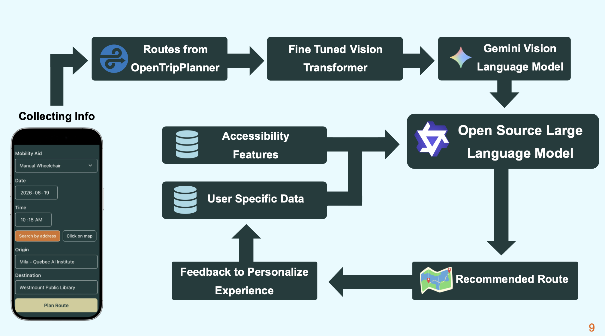

The Application
From user input to route recommendation, see how the ML pipeline is integrated into a full-stack accessible routing tool.
A Working End-to-End System
Urban Access is a complete application taking user inputs and returning accessible route recommendations with plain-language explanations.
How It Works
Seven steps from user input to a ranked route recommendation, combining vision AI, VLM annotation, open data, and an LLM that synthesises everything into plain language.
User Input
The user specifies their mobility aid type, their origin, and their destination. Urban Access supports six aid types: manual wheelchair, electric wheelchair, walker, walking cane, mobility scooter, and mobility impairment without aid.
Candidate Route Generation
Multiple candidate pedestrian routes between origin and destination are generated using OpenStreetMap/OSRM-based routing. This creates the pool of options to evaluate and rank by accessibility.
Street-Level Image Retrieval
For each candidate route, hundreds of street-level images are retrieved from Mapillary at regular intervals along the path using the same coordinate-based API approach developed during dataset creation.
ViT Accessibility Scoring
The fine-tuned Vision Transformer (Pass 1) runs inference on each retrieved image, producing a binary accessibility prediction for the user's selected mobility aid type. Per-image scores are aggregated to rate each route segment.
VLM Secondary Scoring
The most inaccessible or uncertain route points are passed to Gemini 2.5 Flash for a richer, contextual assessment. The VLM provides a rating and natural-language justification for why each critical location is or is not accessible without incurring the cost of running the VLM on every image.
Auxiliary Data Integration
The LLM prompt incorporates four additional data signals: pedestrian safety data (intersection and crossing hazards), construction data (active zones blocking accessible paths), inclination/gradient data (especially relevant for wheelchairs and scooters), and user feedback from similar past journeys.
LLM Route Recommendation
An open-source LLM from HuggingFace synthesises all signals and generates a ranked route recommendation: the primary recommended route with a plain-language explanation, two alternatives with comparative reasoning, and specific accessibility warnings for notable barriers along each route.
Technical Architecture
Built entirely on open-source components and free API tiers, designed to be deployable without a large infrastructure budget.

Full Technology Stack
 FastAPI
Uvicorn
SQLAlchemy
FastAPI
Uvicorn
SQLAlchemy
 Pydantic
python-dotenv
python-jose
Pydantic
python-dotenv
python-jose
 Google Gemini
Custom ViT-B/16 (MAE)
Google Gemini
Custom ViT-B/16 (MAE)
 HuggingFace
FAISS
HuggingFace
FAISS
 scikit-learn
scikit-learn
 OpenStreetMap
polyline
OpenStreetMap
polyline
 Mapillary
Mapillary
 Supabase
Montréal Open Data
Supabase
Montréal Open Data
 Vite
Vite
 React Router v7
React Router v7
 Chakra UI v3
Emotion
Chakra UI v3
Emotion
 Leaflet
Supabase JS
react-markdown
OSM Tile Servers
Leaflet
Supabase JS
react-markdown
OSM Tile Servers
Current constraint: The Google Cloud free tier hosting expires after 3 months. Securing stable hosting, possibly through grant funding, a university partnership, or non-profit cloud credits, is the primary feasibility challenge for sustained deployment. All other components are open-source or available on free tiers.
User Feedback System
Urban Access improves with use. After completing a journey, users can rate the route's accessibility — and that feedback is immediately incorporated into future recommendations.
Feedback Collection
After a journey, users rate the accessibility of the route they used and optionally add qualitative comments. Feedback is stored securely in a Supabase database linked to their account.
Proximity-Weighted Integration
Feedback is incorporated into the LLM prompt that generates route recommendations. Weight is proportional to how closely the previous user's origin and destination match the current query and similar journeys receive more weight.
Future: Reinforcement Learning
The current approach is a prompt-engineering solution. Reinforcement Learning has been identified as the appropriate long-term mechanism for incorporating feedback directly into model scoring, improving continuously as data accumulates.
Privacy & Data Security
User privacy is an important design constraint, not an afterthought. Urban Access was built so that users have meaningful control over their own data.
- All survey data used for label calibration is fully anonymised and no personally identifiable information was collected during the survey campaign except if users wanted to optionally provide their email for progress updates
- User accounts and associated feedback data are stored in Supabase with enterprise-grade security and row-level access controls
- Users can delete their account and all associated feedback data at any time from within the application
- No movement data (journey records) is retained beyond what is necessary for the proximity-weighted feedback calculation
- Feedback data is never sold to or shared with third parties
The goal is that users can engage with the system knowing their data is not being used in ways they did not consent to.
Next: The broader impact, evaluation criteria, and the path to scale
Impact & Vision →